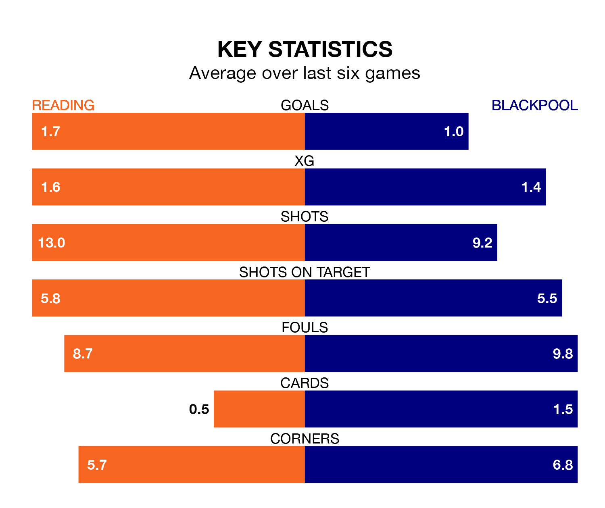

Blackpool visit Reading at the Select Car Leasing Stadium on Saturday lunchtime on the back of four consecutive wins in EFL League One.
Blackpool have picked up 13 points from their last six games, and they face a Royals side who lost their last match, and have collected eight points from the last possible 18.
With 65 goals in 45 games so far this season, Reading are scoring more than average in the league with 1.4 goals per game. But they are conceding more than average too, letting in 68 goals at a rate of 1.5 per game.
Blackpool are also above average scorers, with 1.4 goals per game, compared to a league average of 1.3. They have conceded 1.0 goal per game.
In the last 10 years, Reading and Blackpool have played each other on nine occasions. Reading won three of them, Blackpool four, and they drew twice.
On average, the Royals scored 1.7 goals and the Seasiders 1.8 in those matches.
Their last meeting was on September 23, when Blackpool won 4-1 at home.
With Daniel Grimshaw between the sticks, the Seasiders can rely on one of the league's safest pair of hands. He has kept 18 clean sheets in his 44 appearances this season, and only two other 'keepers – Derby County's Joe Wildsmith and Lincoln City's Lukas Jensen – have been able to prevent the opposition scoring on more occasions in EFL League One.
In the Royals's net, David Button has eight clean sheets in 37 games. He has conceded a goal every 70 minutes, 40% more often than the 97 minutes between goals for Grimshaw.
The away team are eighth in the table after 45 games, of which they have won 21 and drawn 10, earning 73 points.
The hosts are eight places behind Blackpool in 16th, with 15 wins and 11 draws putting them on 56 points.
Reading's last match was on Saturday, a 3-2 loss against Burton Albion, with Lewis Wing and Sam Smith getting the goals for the Royals.
Blackpool beat Barnsley 3-2 last time out, also on Saturday, with Hayden Coulson, James Husband and Sonny Carey on the scoresheet.
Updated: 07:59 (UTC), 26/04/24